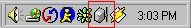

What Is Edna?Edna allows you to access your MP3 collection from any networked computer. This software streams your MP3 via HTTP to any MP3 player that supports playing off a remote connection (Winamp/FreeAmp/Sonique). This software supports
How Edna WorksEdna allows access to your MP3 directory by the web. When a song is requested a stream is set up between the media player and the edna server. The music collection can be accessed by
The Edna ServerThe edna server is a very stable Python program that can be launched in several ways.
Command LineStart the program by typing ./edna.py on a machine with Python installed. If doing this from a remote terminal, try the command ./nohup edna.py to allow the server to continue running even after the connection is closed. As an NT ServiceYou also need the most recent Win32 extensions, and have NT 4.0, or Windows 2000 for this code to work.
As a Windows Taskbar Service
Simply execute  The Edna ClientsWeb BrowserTo view the edna server within a Web Browser, type the IP address of the server followed by a colon and the port the server is running on. If the edna server is configured to run on port 8000 and your ip address is 12.34.56.789, you would go visit http://12.34.56.789:8000 Edna ClientCreating a specialized client has provides the user with benefits over the use of a web browser. Some of the enhancements include
Editing the source
The server code is found in Edna also has some code in it to extract ID3 tags from MP3 files. I'm not using it yet, but will add some code to display the data on the generated web pages. I might also look into using some kind of template mechanism for generating the web pages. A number of people have requested access lists to protect their files, so I'll be adding that soon, too. If you have a pet feature, then please let me know! The client code can be found in edna_gui.py. Most of the code was gui code was done in wxPython. The nice thing is that you don't need to have python installed on your system to edit the code. If you are running the edna.exe and have the python15.dll on your system, you modify any of the files within the app directory. DownloadEdna is licensed under the GPL. It is a small Python script. At the moment, it is about 1000 lines (version 0.1 was only 250!). You can view the thing online, or grab the distribution. edna is checked into a CVS repository and is available for viewing with your web browser. The server should work for any platform. I've tested it on Linux and Windows. I've been using Internet Explorer and WinAmp (on Windows) to navigate the pages and play the files.
ConfigurationServer
Edit the
Client
Edit the
Contact InformationGreg Stein - Project Leader (gstein@lyra.org) |